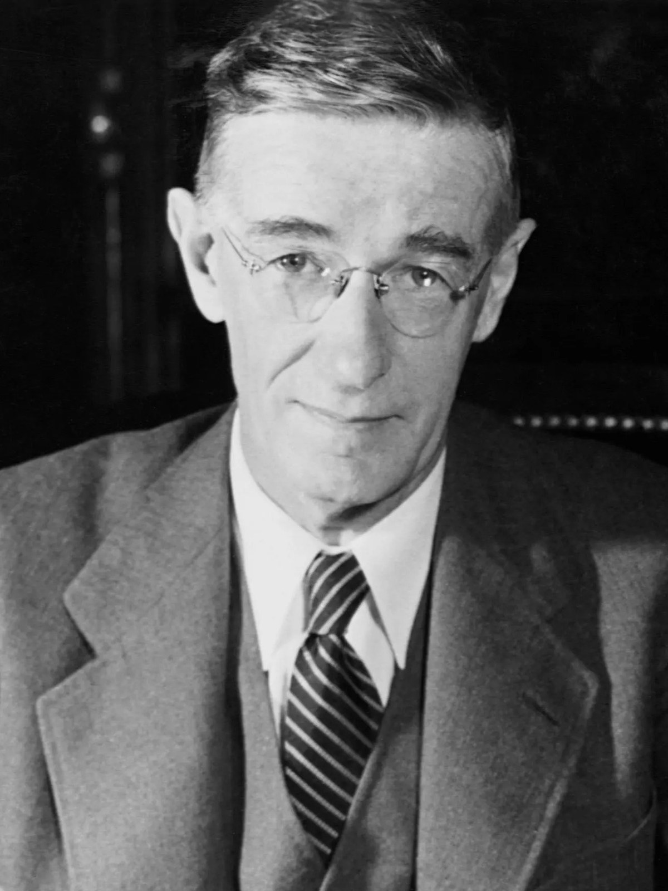
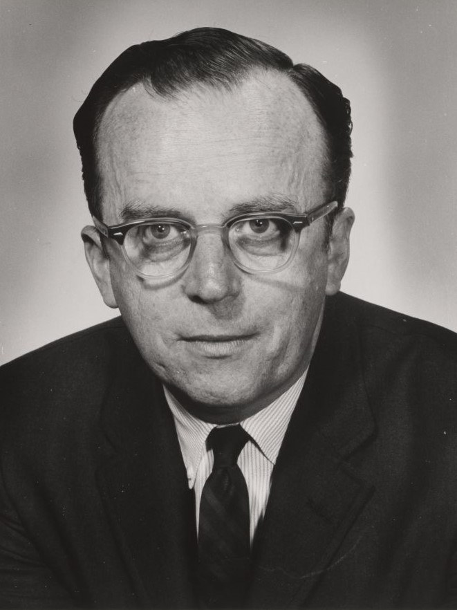
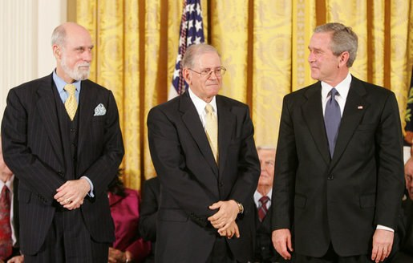
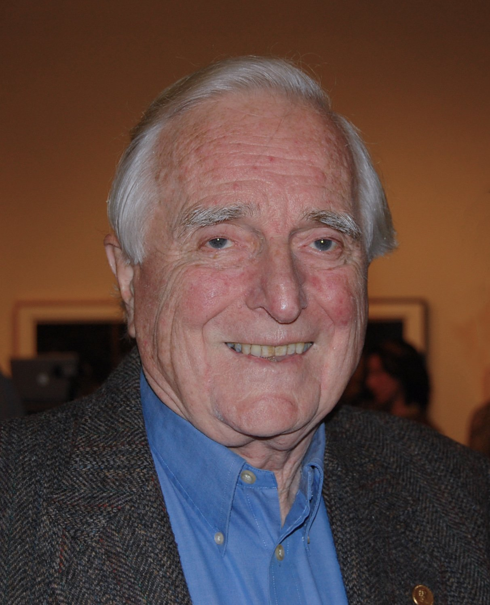
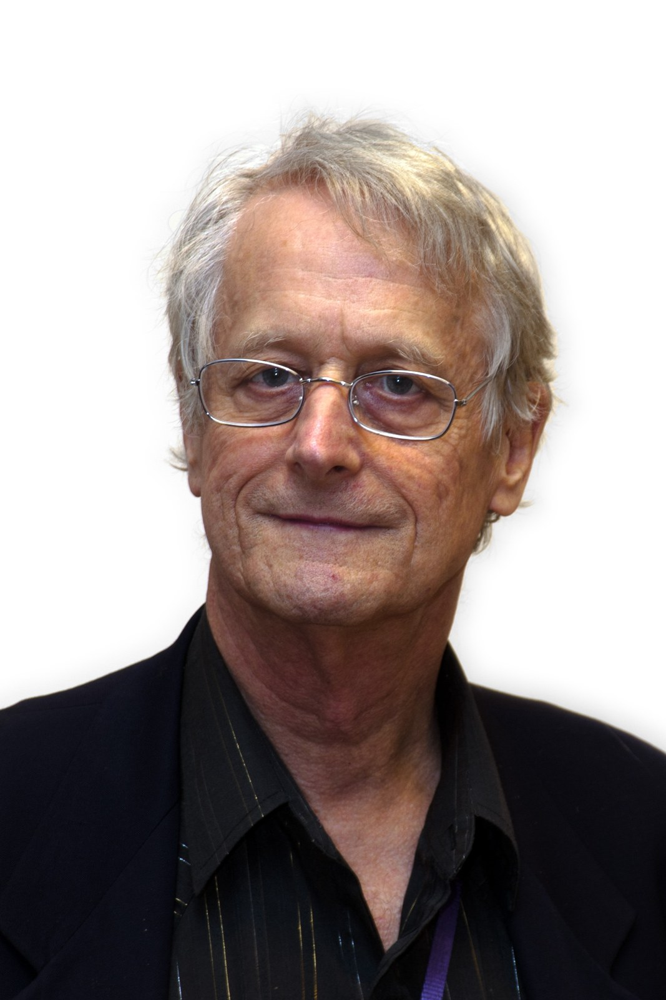
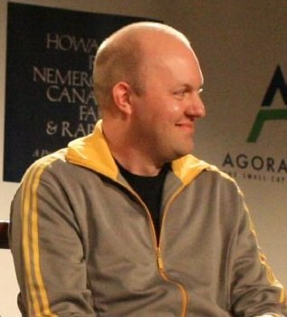
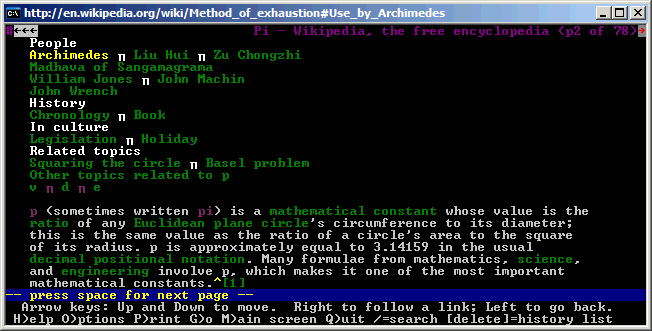

The Internet and the World Wide Web were not created by
one person. They developed through the work of many
researchers, engineers and computer scientists.
Each of these pioneers contributed ideas and technologies
that helped shape the digital world we use today.
Vannevar Bush

Vannevar Bush
Vannevar Bush was an American engineer and inventor.
In 1945, he published an article called "As We May Think".
He described a theoretical machine called Memex, which
could help people store and connect information.
His idea included creating links between related documents.
These ideas later influenced the development of hypertext
(Bush, 1945).
Key contribution: 1945 – Memex concept.
J.C.R. Licklider

J.C.R. Licklider
J.C.R. Licklider was an American psychologist and
computer scientist. In 1962, he described the idea
of a globally connected network called the
"Galactic Network". He imagined that people could
access information and programs from computers
in different locations. His vision influenced early
networking research and the development of ARPANET
(Internet Hall of Fame, n.d.).
Leonard Kleinrock is an American computer scientist
known for his work on packet switching. In 1961,
he published research about sending information
in smaller units called packets. His work helped
establish the theoretical foundation for computer
networks. UCLA became the first ARPANET node in 1969
(Kleinrock, 2010).
Key contributions: 1961 – Packet switching research; 1969 – First ARPANET node at
UCLA.
Vint Cerf and Bob Kahn

Vint Cerf and Bob Kahn
Vint Cerf and Bob Kahn are two important figures
in Internet history. They worked together on the
development of TCP/IP, a set of protocols that
allows different networks to communicate.
Their work made it possible to connect many
independent networks into one larger network.
TCP/IP became the foundation of the modern Internet
(Internet Hall of Fame, n.d.).
Ray Tomlinson was an American computer programmer
who developed an early system for sending email
between computers on ARPANET. In 1971, he adapted
existing messaging programs to send messages
between different machines. He also introduced
the use of the @ symbol in email addresses.
His work helped make email an important Internet
service (Internet Hall of Fame, n.d.).
Key contribution: 1971 – Network email and the @ symbol.
Douglas Engelbart

Douglas Engelbart
Douglas Engelbart was an American inventor and
computer pioneer. He worked on ways to make
computers easier for people to use. In 1968,
he demonstrated the computer mouse, hypertext
links and collaborative computer tools.
His famous presentation became known as
"The Mother of All Demos". His ideas influenced
modern computer interfaces and online collaboration
(Internet Hall of Fame, n.d.).
Key contribution: 1968 – The Mother of All Demos.
Ted Nelson

Ted Nelson
Ted Nelson is an American sociologist and computer
pioneer. He introduced the term "hypertext" in 1963,
and published it in a paper in 1965. He also started
Project Xanadu in 1960, with the goal of connecting
digital documents through links. His ideas focused
on making information easier to connect and explore
(World Wide Web Consortium, n.d.).
Tim Berners-Lee invented the World Wide Web while
working at CERN. In 1989, he proposed a system
that would allow researchers to share information
through linked documents. Robert Cailliau helped
develop and promote the project. Berners-Lee created
the first web browser and server, and their work
helped the Web grow (CERN, n.d.).
Key contributions: 1989 – Web proposal; 1990 – First browser and server.
Marc Andreessen and Eric Bina

Marc Andreessen, who developed Mosaic with Eric Bina. Image attribution: see References.
Marc Andreessen and Eric Bina were software developers
at the National Center for Supercomputing Applications.
In 1993, they created Mosaic, an early graphical
web browser. Mosaic made browsing easier by displaying
text and images together on web pages. It helped
introduce the Web to a much wider audience and
influenced later browser development
(Computer History Museum, n.d.).
Key contribution: 1993 – Mosaic web browser.
Lou Montulli

HTTP cookies, a technology developed by Lou Montulli (AI-generated illustration).
Lou Montulli is an American computer programmer
who helped develop the early web browser Lynx
in 1991. Later, he became one of the founding
engineers at Netscape. In 1994, he developed
browser cookies, which allowed websites to remember
information between visits. His work contributed
to several important web technologies
(Montulli, 2016).
Paul Baran was an American engineer who worked
at the RAND Corporation. During the 1960s, he
researched ways to build communication networks
that could continue working even if some parts
were damaged. He developed ideas about distributed
networks and sending information through different
paths. His research became an important part of
the history of packet switching (IEEE Communications Society, n.d.).
Donald Davies was a British computer scientist
who worked at the National Physical Laboratory.
In 1965, he developed an idea for sending information
in small units instead of sending one large message.
He introduced the term "packet" for these units
and called the method packet switching. His work
helped influence the design of early computer
networks (MacTutor History of Mathematics, n.d.).
J.C.R. Licklider imagined a world where computers
in different locations could connect and share
information. Today, Kubernetes helps manage
applications across groups of computers called clusters.
Both ideas involve making different computing resources
work together, but they solve different problems.
Licklider focused on connecting people and computers,
while Kubernetes focuses on managing modern applications.
This comparison shows how computing has developed
from early networking ideas to today's technology.